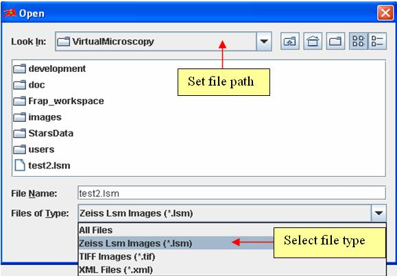
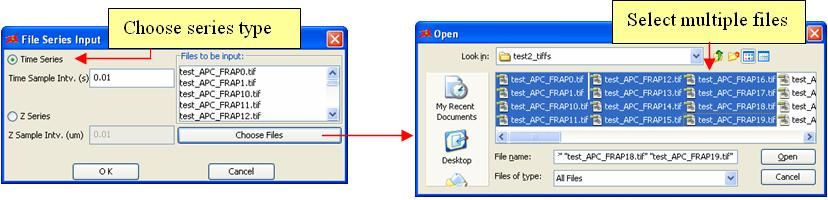

- Loading data from a single file
Clicking on Open button
 or menu “File -> Open” will pop up an open file dialog to load data from a single file. Choose the file path and select the appropriate format. FRAP data can be loaded from different sources. Figure 3-2 shows the open file dialog.
or menu “File -> Open” will pop up an open file dialog to load data from a single file. Choose the file path and select the appropriate format. FRAP data can be loaded from different sources. Figure 3-2 shows the open file dialog.
-
Images
- More than 50 image file types are supported in Virtual Frap by using Bio-Formats library (detailed information about supported image file types can be found in http://www.loci.wisc.edu/ome/formats.html ). Zeiss lsm and TIFF image formats are both available in “Files of Type”. To load image types other than “.lsm” and “.tif”, users need to choose “All Files” as file type. -
Virtual Frap documents
- Virtual Frap has its own internal file format “.vfrap”. It’s basically a xml file. It saves not only the FRAP images but also the primary redistribution curve fitting information. -
Virtual Cell Simulation Log files
- VCell simulation result data are retrievable from a “.log” file. By opening the VCell log file and selecting a specific variable, the spatial results will be loaded as initial FRAP data. To be able to see the log files from file chooser, users need to choose “All Files” as file type.

Figure 3-2: Open a Single File in Virtual Frap
- Loading data from file series
Clicking on menu “File -> Load file series …” will pop up a file series input dialog to load file series (e.g. a time series of FRAP experiment images or a series of images at specific time point alone the Z axis). Users must specify whether the data is either a time series or z series. In addition, users have to specify the time interval between images for time series data or the Z axis interval for z series data. The “Choose Files” button will lead user to an open file dialog which allows users to select multiple files. The file types are the same image file types supported by Bio-Formats as mentioned for single format. Figure 3-3 shows the file series input dialog.

Figure 3-3: Open File Series in Virtual Frap